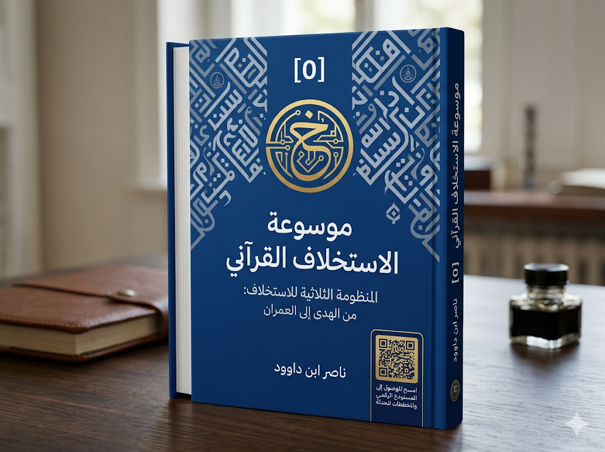

ناصر ابن داوود

نسخة نصية مستخرجة من ملف Word الذي قدمه المؤلف؛ راجع المصدر الأصلي.
جارٍ تجهيز القارئ…
المنظومة الثلاثية للاستخلاف: من الهدى إلى العمران
مقدمة موسوعة الاستخلاف القرآني
تقوم هذه الموسوعة على فرضية مركزية مفادها أن القرآن الكريم لا يقدم الدين بوصفه مجموعة متفرقة من العقائد والشعائر والأحكام، بل بوصفه مشروعاً متكاملاً لبناء الإنسان الشاهد القادر على تحقيق الاستخلاف والعمران في الأرض.
وقد أدى اختزال الدين عبر التاريخ إلى تفكيك هذه الوحدة العضوية؛ فتم التعامل مع العقيدة بمعزل عن الوعي، ومع الوعي بمعزل عن العمل، ومع العمل بمعزل عن السنن، فانفصل البناء الروحي عن البناء المعرفي، وانفصل كلاهما عن البناء الحضاري.
ومن هنا تنطلق هذه الموسوعة من محاولة إعادة اكتشاف القانون القرآني الذي يحكم انتقال الإنسان من مجرد متلقٍ للهداية إلى شاهد على الحق، ومن شاهد إلى مستخلف، ومن مستخلف إلى صانع للعمران الراشد.
وتنطلق هذه الرؤية من المتوالية القرآنية الكبرى:
الحق
↓
الهدى
↓
الإخلاص
↓
الميزان
↓
السنن
↓
الشهادة
↓
الاستخلاف
↓
العمران
فالحق هو المرجعية الوجودية المطلقة التي يقوم عليها الكون.
والهدى هو البيان الإلهي الذي يكشف للإنسان حقيقة نفسه وحقيقة العالم من حوله.
أما الإخلاص فهو تحرير الوجهة وإفراد الحق بالتوجه والقصد، وهو الشرط الأول لبناء الإنسان القادر على تجاوز الأهواء والأنداد والولاءات المزاحمة.
ثم يأتي الميزان بوصفه أداة الإدراك والفهم والحكم، والذي يحرر العقل من العشوائية ويمنحه القدرة على قراءة الوحي والواقع قراءة منضبطة.
ثم تأتي السنن باعتبارها القوانين التي تحكم حركة الوجود والتاريخ والمجتمعات، والتي لا يمكن تحقيق الاستخلاف دون فهمها والتفاعل معها.
وعندما تتكامل هذه العناصر داخل الإنسان تتولد الشهادة؛ إذ يصبح الإنسان قادراً على تمثل الحق في وعيه وسلوكه وعلاقاته وفاعليته في الواقع.
ومن الشهادة ينشأ الاستخلاف المتحقق، لا باعتباره امتيازاً ممنوحاً، بل باعتباره نتيجة طبيعية لتوافق الإنسان مع مقتضيات الحق والهدى والسنن.
أما العمران الراشد فهو الثمرة التاريخية النهائية لهذا المسار؛ حيث تتحول الهداية إلى واقع، ويتحول الوعي إلى حركة، وتتحول الحركة إلى حضارة.
وانطلاقاً من هذه الرؤية تنقسم الموسوعة إلى ثلاث مجلدات مترابطة تمثل مراحل بناء الإنسان الشاهد:
المجلد الأول:
الدين الخالص
معمارية الروح
ويعالج وظيفة التوجيه، ويجيب عن السؤال:
كيف يتحرر الإنسان من الشرك الظاهر والخفي ليصبح متوجهاً إلى الله وحده؟
ومحوره المركزي هو الإخلاص.
المجلد الثاني:
الدين القيم
معمارية الوعي الاستخلافي
ويعالج وظيفة الإدراك، ويجيب عن السؤال: